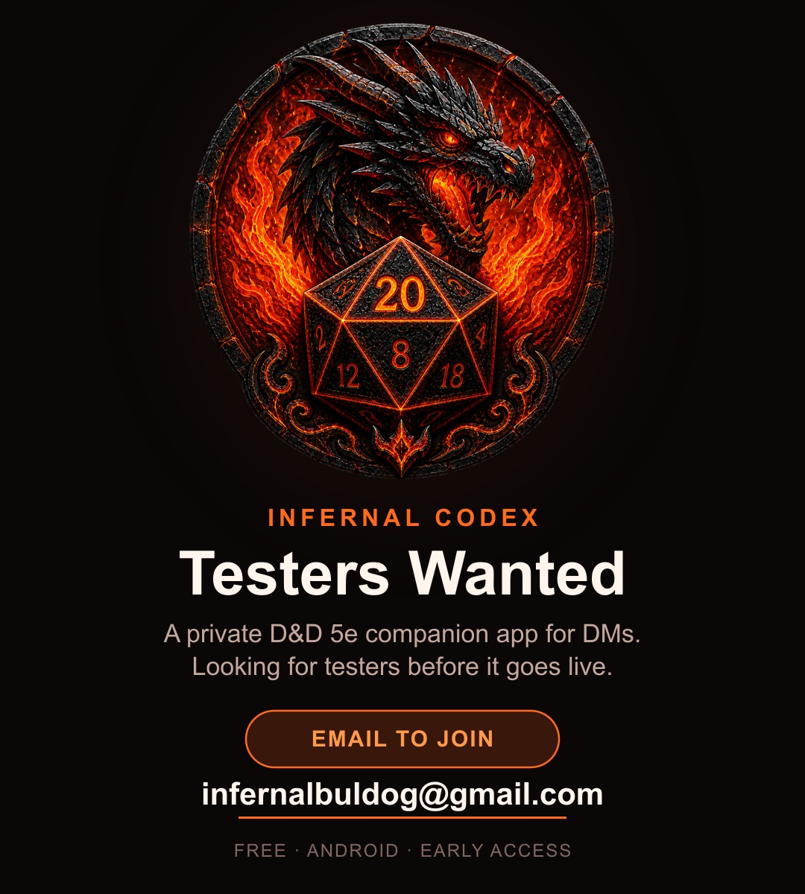

Testers Wanted

Infernal Codex is ready for a real test run before it goes live on the Play Store — a private D&D 5e companion app with offline rules, an NPC tracker, notes, encounters, a live combat tracker, and optional Pro AI prep tools.
Looking for a few DMs to install it, run a session or two, and report back what's confusing, broken, or missing. It's free, Android only for now, and no strings attached.
To join, email infernalbuldog@gmail.com with the Gmail address you'd like added to the tester list.